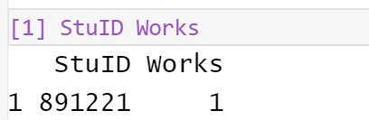

Code
knitr::opts_chunk$set(warning = FALSE, message = FALSE)Barboza-Salerno
In class we discussed probability sampling, including simple random sampling, stratefied sampling and cluster sampling. This is a simple script to demonstrate how we can use built-in functions to simulate random numbers in R and use those to select a sample from a generated hypothetical list of student IDs. The question of interest is: how many students at some hypothetical university are full-time workers?
For a challenge, write the code to loop through the records and create a datafile contining the results with columns for the student ID and an indicator for whether the student works or not.
1 in the Works column otherwise record 0. Then, re-run until you have 500 people in the sample.
---
title: "Selecting Students at Random for Inclusion in a Hypothetical Survey"
author: "Barboza-Salerno"
format: html
editor: visual
---
```{r}
knitr::opts_chunk$set(warning = FALSE, message = FALSE)
```
## Introduction
In class we discussed probability sampling, including simple random sampling, stratefied sampling and cluster sampling. This is a simple script to demonstrate how we can use built-in functions to simulate random numbers in R and use those to select a sample from a generated **hypothetical** list of student IDs. The question of interest is: how many students at some hypothetical university are full-time workers?
::: {.callout-note icon=true}
For a challenge, write the code to loop through the records and create a datafile contining the results with columns for the student ID and an indicator for whether the student works or not.
:::
#### Generate random digits between 1 and 999999
```{r}
library(dplyr)
random_number <- runif(500, min = 1, max = 999999)
```
#### Make sure we have whole numbers, student IDs are not digits
```{r}
number <- floor(random_number)
```
#### Pad numbers that are not 6 digits with a "0"
```{r}
number <- stringr::str_pad(number, 6, side="left", pad="0")
```
#### Create dataset of 20 students, with a variable = 1 if they work
```{r}
m <- 20
n <- 2
df_workstudy <- data.frame(matrix(0, nrow = m, ncol = n, dimnames = list(NULL, paste0("ColumnName_", 1:n))) )
```
#### Remane the columns
```{r}
colnames(df_workstudy)[1] <- "StuID"
colnames(df_workstudy)[2] <- "Works"
```
#### create dummy data of students and work condition (THESE DATA ARE FAKE!!)
```{r}
df_workstudy$StuID <- c(
902372,
351737,
989354,
353513,
891221,
133616,
258885,
860899,
852253,
704750,
573238,
31707,
432924,
856104,
237756,
866992,
905184,
727601,
761719,
86299
)
df_workstudy$Works <- c(0, 0, 1, 1, 1, 0, 0, 0, 1, 1, 1, 1, 0, 0, 1, 0, 1, 0 ,0, 0)
```
#### We have a 6 digit ID with padded 0s if the number is less than 6, we we add 0s to the numbers
```{r}
df_workstudy$StuID <- stringr::str_pad(df_workstudy$StuID, 6, side="left", pad="0")
```
#### Is the student ID in the dataframe of student IDs
```{r }
percent_students_work <- df_workstudy %>% filter(StuID %in% number)
```
#### **IF** the student works, record a `1` in the `Works` column otherwise record `0`. Then, re-run until you have 500 people in the sample.
```{r}
percent_students_work # this student would be selected for inclusion in the sample
```
#### If there is a match record whether the student works. This student did work. Then re-run until you get another 'hit' or taken on the challenge above.